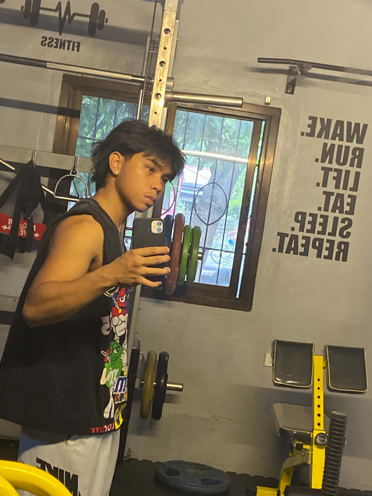

Name:Alvin B. Bustillo
Age:20 years old
Course/Program: Bachelor of Science in Computer Science (BSCS)
Personal Introduction: Hello! I am a passionate tech enthusiast currently pursuing my degree. I love solving problems through code and exploring modern web development technologies.
Career Goals & Aspirations: My goal is to become a proficient Full-Stack Software Engineer, contributing to meaningful digital products that improve everyday life.